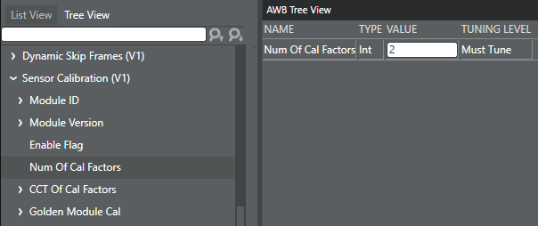
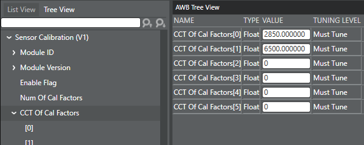
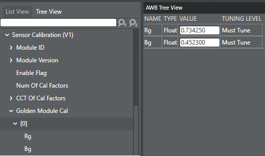

Obtain the current sensor calibration R/B
and B/G values for each illuminant from the EEPROM/OTP data that are outputs of a sensor
driver. Note that the order of the EEPROM/OTP data from the sensor driver may be
different from that of EEPROM/OTP data in the sensor specification document provided by
manufacturers.
After doing this initial tuning, the
calibration factor should not require further tuning unless the golden module is
updated.
-
Open the project and click the AWB tab.
-
Click the Tree View tab
and locate Sensor Calibration (V1).
-
Select . Enter the number of calibration factors (light sources) you need
to enter.
For example, if EEPROM data has two different calibration factors for A
(2850K) and D65 (6500K) light sources, enter "2".

-
Select . Enter the color temperature of each light source as illustrated
by the two entries in the example.

-
Select . Enter the color R/G and B/G calibration factors for each light
source index as illustrated by the entries illustrated in the example.

-
Select .